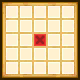

| Lv: | 140 |
|---|---|
| HP: | |
| MP: | |
| ATK: | |
| DEF: | |
| AGL: | |
| WIS: | |
| Move: | |
| Weight: | 60 |
| Weaknesses: | / | ||||
|---|---|---|---|---|---|
| Resistances: | / | ||||
| Immunities: |
| Abilities | ||||||
|---|---|---|---|---|---|---|
| Level | Type | Name | MP | Element | Range | Description |
| 1 | Spirit of the Dance | 32 |  1-3 (incl. self) |
Heals a moderate amount of HP and removes some status ailments for 1 ally | ||
| 33 | 惑乱炎舞 | 76 | Straight Line |
Deals major Sizz-type physical damage (300% potency) to all enemies in area of effect, often confuses This attack cannot be redirected by abilities or perks such as Cover or Selflessness |
||
| 52 | トラックソード | 74 | 1-3 |
Deals major surehit physical damage (360% potency) to 1 enemy, applies Locked-On for 3 turns | ||
| 82 | 閃熱神楽 | 74 | Front |
Deals minor Sizz-type physical damage (52% potency) to random enemies in area of effect 10 times, very rarely lowers DEF and Physical Res for 3 turns Turns needed: 2 turns (Times usable: 3) |
||
| Base Perks | ||
|---|---|---|
| Level | Name | Description |
| 1 | Max HP +30 | Raises max HP by 30 |
| 1 | AGL +20 | Raises max AGL by 20 |
| 1 | ユバールの剣舞 | When an ally (incl. self) is attacked by enemy: For number of attacked allies (incl. self) only, attacks with トラックソード if enemy is within 1 to 3-space range, up to 3 times per battle |
| 110, 120, 130, 140 | トラックソード potency +2% | Raises トラックソード potency by 2% |
| 110, 120, 130, 140 | 閃熱神楽 potency +2% | Raises 閃熱神楽 potency by 2% |
| Awakening Perks | ||
|---|---|---|
| Awakening | Name | Description |
| 1 | ユバールの踊り手 | Battle start: Grants a barrier that reduces damage taken by 20% for 3 turns Action start on odd turns until turn 10: Raises ATK and AGL for 3 turns |
| 2 | Zam Res +25 | Raises Zam resistance by 25 |
| 3 | 守り手の血筋 | When an ally (incl. self) is afflicted with a status ailment: Removes some status ailments If the user has not acted this turn, then the user will be the next unit to act, regardless of original turn order (Perk activates 1 time per battle) This perk can be triggered by non-damage dealing abilities or attacks by allies |
| 3, 5 | トラックソード potency +5% | Raises トラックソード potency by 5% |
| 3, 5 | 閃熱神楽 potency +5% | Raises 閃熱神楽 potency by 5% |
| 4 | Woosh Res +25 | Raises Woosh resistance by 25 |
| 5 | Max HP +100 | Raises max HP by 100 |
| 1, 2, 3, 4, 5 | Stats Up | Raises HP, MP, ATK, DEF, WIS and AGL by 5% |